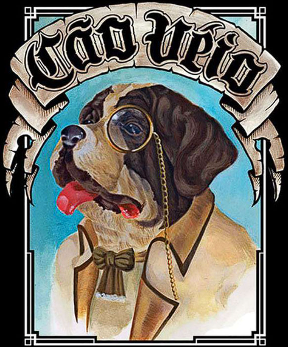

UM PUB DIFERENTE, UMA EXPERIÊNCIA QUE REÚNE
GASTRONOMIA, ROCK E AS MELHORES BEBIDAS, INCLUINDO
UMA ENORME VARIEDADE DE DRINKS E CERVEJAS.
saiba mais
SUA MELHOR OPÇÃO DE GASTROPUB
O Cão Véio é um gastropub, um misto de bar e restaurante, com espaços mais aconchegantes, com pouca luz e tem uma atmosfera bem intimista. A decoração tem forte influência Londrina, e menções aos cachorros, de forma hilária e questionadora à postura de humanos, características que dá nome à marca.
Saiba mais